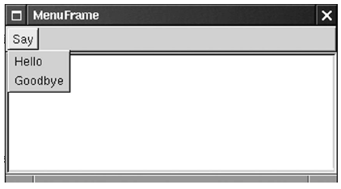
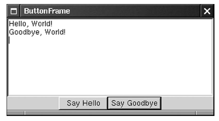
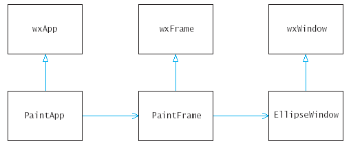
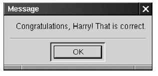
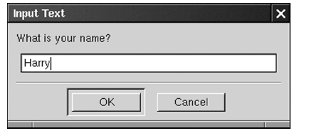
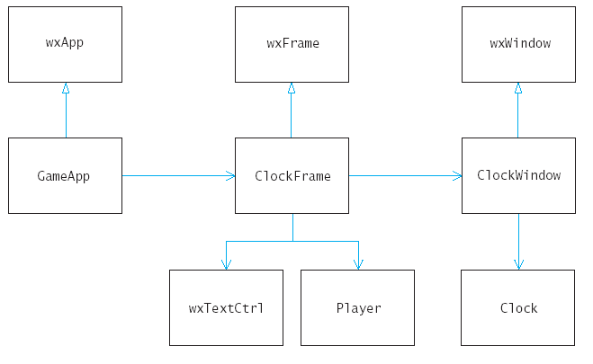

class BasicApp: public wxApp
{
public:
BasicApp();
virtual bool OnInit(); /* override base class implementation */
private:
wxFrame* frame; /* this application has a frame */
};
BasicApp::BasicApp()
{
frame = new wxFrame(NULL, -1,
"My First GUI Program");
}
bool BasicApp::OnInit()
{
frame->Show(true);
return true;
}
DECLARE_APP(BasicAPP)
IMPLEMENT_APP(BasicAPP)
class TextFrame : public wxFrame
{
public:
TextFrame();
private:
wxTextCtrl* text;
};
TextFrame::TextFrame()
: wxFrame(NULL, -1, "TextFrame")
{
text = new wxTextCtrl(this, -1, "Type some text here!",
wxDefaultPosition, wxDefaultSize, wxTE_MULTILINE);
}
class TextApp : public wxApp
{
public:
TextApp();
virtual bool OnInit();
private:
TextFrame* frame;
};
TextApp::TextApp()
{
frame = new TextFrame();
}

const int ID_SAY_HELLO = 1000;
const int ID_SAY_GOODBYE = 1001;
wxMenu* menu = new wxMenu();
menu->Append(ID_SAY_HELLO, "Hello");
menu->Append(ID_SAY_GOODBYE, "Goodbye");
wxMenuBar* menu_bar = new wxMenuBar();
SetMenuBar(menu_bar);
menu_bar->Append(menu, "Say);
void EventFrame::OnSayHello(wxCommandEvent& event)
{
text->AppendText("Hello, World!\n");
}
BEGIN_EVENT_TABLE(ClassName, BaseClassName)
EVT_TYPE(parameters, function)
. . .
END_EVENT_TABLE()
BEGIN_EVENT_TABLE(EventFrame, wxFrame)
EVT_MENU(IS_SAY_HELLO, EVentFrame::OnSayHello)
END_EVENT_TABLE()
class EventFrame : public wxFrame
{
. . .
private:
wxTextCtrl* text;
DECLARE_EVENT_TABLE()
};
BEGIN_EVENT_TABLE(ButtonFrame, wxFrame)
EVT_BUTTON(IS_SAY_HELLO, ButtonFrame::OnSayHello)
END_EVENT_TABLE()
wxButton* hello_button = new wxButton(this,
IS_SAY_HELLO, "Say Hello");
void ButtonFrame::OnSayHello(wxCommandEvent& event)
{
text->AppendText("Hello, World!\n");
}
wxBoxSizer* button_sizer = new wxBoxSizer(wxHORIZONTAL);
button_sizer->Add(hello_button);
button_sizer->Add(goodbye_button);
wxBoxSizer* frame_sizer = new wxBoxSizer(wxVERTICAL);
frame_sizer->Add(text, 1, wxGROW);
frame_sizer->Add(button_sizer, 0, wxALIGN_CENTER);

SetAutoLayout(true);
SetSizer(frame_sizer);
wxBoxSizer* frame_sizer = new wxBoxSizer(wxVERTICAL);
frame_sizer->Add(text, 1, wxGROW);
frame_sizer->Add(button_sizer, 0, wxALIGN_CENTER);
EVT_PAINT(EllipseWindow::OnPaint)
void EllipseWindow::OnPaint(wxPaintEvent& event)
{
wxPaintDC dc(this);
dc.SetBrush(*wxTRANSPARENT_BRUSH);
wxSize size = GetSize();
int x = 0;
int y = 0;
int width = size.GetWidth();
int height = size.GetHeight();
dc.DrawEllipse(x, y, width, height);
}

BEGIN_EVENT_TABLE(TriangleWindow, wxWindow)
EVT_MOUSE_EVENTS(TriangleWindow::OnMouseEvent)
. . .
void TriangleWindow::OnMouseEvent(wxMouseEvent& event)
{
if (event.ButtonDown() && corners < 3)
{
x[corners] = event.GetX();
y[corners] = event.GetY();
corners++;
Refresh();
}
}
void TriangleWindow::OnPaint(wxPaintEvent & event)
{
const int RADIUS = 2;
wxPaintDC(this);
if (corners == 1)
dc.DrawEllpse(x[0] - RADIUS, y[0] - RADIUS,
2 * RADIUS, 2 * RADIUS);
if (corners >= 2)
dc.DrawLine(x[0], y[0], x[1], y[1]);
if (corners >= 3)
{
dc.DrawLine(x[1], y[1], x[2], y[2]);
dc.DrawLine(x[2], y[2], x[0], y[0]);
}
}
wxMessageDialog* dialog = new wxMessageDialog(parent, message);
dialog->ShowModal();
dialog->Destroy();

string message = "Hello, " + name;
dialog = new wxMessageDialog(this, message.c_str());
wxTextEntryDialog* dialog = new wxTextEntryDialog(this,
"What is your name?";
dialog->ShowModal();
string name = dialog->GetValue().c_str();
dialog->Destroy();

